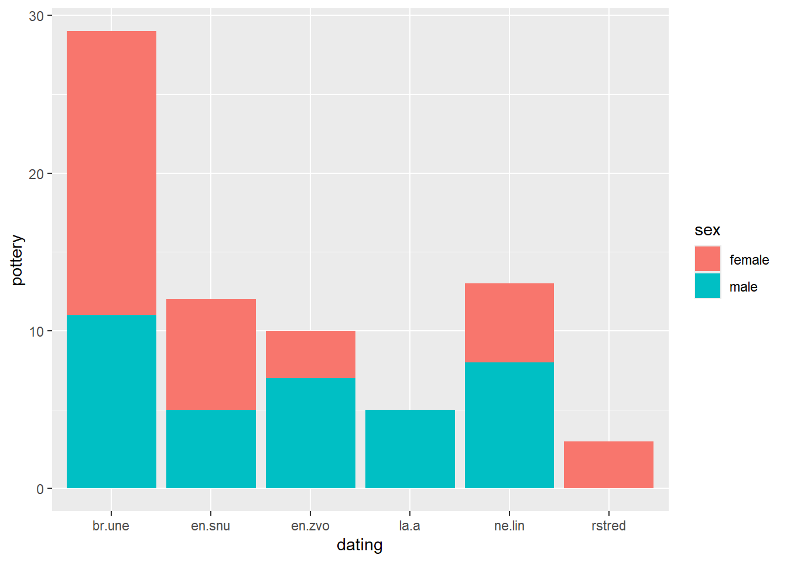

load libraries here,dplyr and ggplot2, install and load library dplyr
import data “fake_graves.csv”
Hints:
install.packages(), library(), here(), read.csv()
The problem
Have a look at df_graves:
head(df_graves, 2)
grave_number dating sex age pottery bronze stone_chipped stone_polished
1 800 ne.lin male 31-40 3 0 1 2
2 801 ne.lin male 21-30 4 0 1 1
grave_length grave_depth
1 210 50
2 160 40
Questions:
what is one observation? What are the variables?
Imagine we want to visualise the relationship between types of artefact, sex, and dating of graves. This can only be achieved by visualising each artefact separately, since they are separated into their own columns, and the argument aes(x = , y = ) of the ggplot() only allows one variable to be visualised in either x or y.
Here is an example with the artefact type “pottery”
ggplot(df_graves, aes(x = dating, y = pottery, fill = sex))+geom_bar(stat ="identity")

Note that we had to add stat = identity argument to geom_bar(). We will explain this later.
Solution
Ideally, we would like all artefacts to be in one variable/column, with their count in another. To achieve this, we will create a “long” table using the tidyr::pivot_longer() function.
cols = - defines which columns will be transformed into one
names_to - sets the name for the column in which other columns will be transformed (their names will be transformed to values)
values_to - sets the name for the column in which values of the transformed columns will be stored
# A tibble: 4 × 6
grave_number dating sex age artefact n_artefact
<int> <chr> <chr> <chr> <chr> <int>
1 800 ne.lin male 31-40 pottery 3
2 800 ne.lin male 31-40 stone_chipped 1
3 800 ne.lin male 31-40 stone_polished 2
4 801 ne.lin male 21-30 pottery 4
Be carefull!
bear in mind that the observations (i.e. the contents of each row) in the original wide table are different from the observations in the new long table.
that is why, if we want to calculate the number of sexes in the long table, the function table() will return incorrect numbers because its calculation is based on rows.
table(df_long$sex)
female male
20 20
You have to either use the original table:
table(df_graves$sex)
female male
10 10
…or do some extra dplyr coding with the long table
df_long |>distinct(grave_number, sex) |>count(sex, name ="n_graves")
# A tibble: 2 × 2
sex n_graves
<chr> <int>
1 female 10
2 male 10